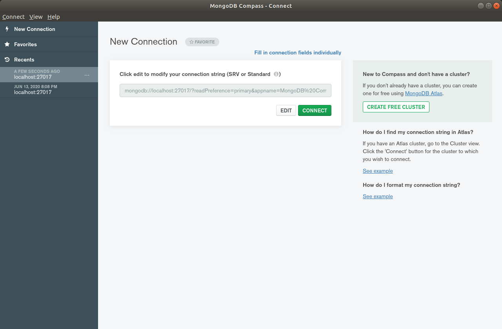

Desarrollo e implentación de una aplicación de notas realizada con node.js, sincronizada con Mongo Atlas y desplegada en un entorno de producción con Heroku
Implementación
About
El objetivo de esta web es documentar el desarrallo de una aplicación de notas creada con node.js para el proyecto de fin de Ciclo de DAW del IES Fernando Wirtz Suárez
En el siguiente enlace puedes descargar el código y a través de está web consultar toda la información necesaria para su implementación
Para instalar la version gratuita de mongodb, en esta caso la Community Edition he seguido los pasos del siguiente enlace: Install Mongo
Una vez completada la instalación, se comprueba que mongo está instalado correctamente. Se inicia con el comando "mongo". Para ver las BBDD: "show dbs"
Instalación Mongo Compass
La herramienta de trabajo Compass ofrece un entorno gráfico para nuestra base de datos mongo. Su instalación en linux es muy sencilla, simplemente seleccionamos la instalación linux del siguiente enlace: Compass

El panel de control principal muestra la lista de conexiones disponibles. Como la conexión a nuestra base de datos es local pulsamos el botón "connect" dejando el nombre de la conexión en blanco.
A continuación podemos ver la lista con las bases de datos disponibles. También nos ofrece la posibilidad de crear una nueva base de datos.
Atlas - Cloud Mongodb
Una de las peculiaridades de mongo es su conexión con Atlas, que provee a nuestra base de datos de una infraestructura cloud: Atlas.
Tras el registro previo y seleccionado un servidor lo primero será observar el panel de control y ver todas la opciones que ofrece, nos centraremos únicamente en las más importantes.
En la imagen se puede ver la creación de un cluster que ofrece alta disponivilidad a la base de datos con tres nodos disponibles. Esta opción es configurable y sobre esta cluster vamos a enlazar nuestra base de datos local.
El siguiente paso el la creación de un usuario de aplicación para la base de datos el cual usaremos más adelante para conectar nuestra aplicación. Se le otorgan permisos de administrador de BBDD.
En la pestaña network se indica el acceso a todas la direcciones añadiendo la ip 0.0.0.0/0 con status activo.
Ahora volvemos a la pestaña cluster y realizamos una conexión con nuestra base de datos local, seleccionando la opción de conectar a Compass.
Se copia el conector generado el cual usaremos para realizar la conexión con nuestro entorno local.
De vuelta a Compass, se cre una nueva conexión pegando el código de conexión. Una vez realizado se puede observar los 3 nodos del cluster ahora disponibles en el menú de la izquierda.
De esta manera ya tenemos conectada nuestra base de datos en local a Mongo Atlas, por lo que cualquier cambio que hagamos en la base de datos de nuestro cluster lo veremos sincronizado en local y viceversa.
Entorno de desarrallo
El entorno de desarrollo que he utilizado está compuesto por la siguientes herramientas:
Ubuntu 18.04
Visual Studio Code
Mongodb
Mongo Compass
node js
Git
Además también se han utilizado otras herramientas como es el caso del cloud de Mongo (Atlas), el repositorio web de GitHub y el posterior despliegue en producción con Heroku.
Lo primero es instalar el gestor de paquetes de node, el npm, el cual nos permiste descargar las dependencias necesarias para nuestra aplicación.
Desarrollo app
A continuación se describen algunos de los pasos y clases de código más relevantes de la aplicación. Al final de este hilo se incluye un enlace para descargar el proyecto
Una vez instalados los paquetes necesarios para que nuestra aplicación pueda funcionar se procedera a crear un nuevo proyecto en Visual.
Se comprueban con el comando --version que los paquetes han sido instalados con éxito.
En mi caso he creado una carpeta en la raíz de directorio git con el nombre del proyecto NOTE-APP.
Una vez dentro de visual importamos el proyecto que contendría la siguiente estructura completa una vez finalizado..
El package.json es un fichero autogenerado en el cual irán aparenciendo las dependencias que vayamos instalando a lo largo del desarrollo. Siempre que instalemos una dependencia hay que asegurarse de que estamos situados en la consola dentro de la carpeta del proyecto.
En el momento que hacemos el build de la aplicación index.js es la clase principal que gestiona todos los recursos.
Database.js es el fichero de configuración con la BBDD. En la función connect se pasa como parametro un String de conexión en caso de que la variable de entorno sea null. Esa variable es la que se usará más adelante para la conexión con Heroku.
Otra parte importante son las vistas gestionadas por el motor de plantillas de express.js. La vista principal es el main y el resto de componentes html se incluyen dentro de la vista principal.
La implementación del login se hace en la clase passport.js. La última función muestra otro ejemplo, en esta caso un findAll contra la base de datos.
Los modelos suelen representar entidades de base de datos. La clase user.js contiene una lista de atributos de usuario y crea un schema dentro de la base de datos.
Todas las rutas de la apliación se gestionan desde los fichero de routes. Justo en las cabeceras de las funciones se escribe el código que hace referencia a estas direcciones
La aplicación completa puede descargarse desde github en el siguiente enlace: GitHub
GitHub
Github es el repositorio que almacena el código de nuestra aplicación y gestiona los cambios realizados por uno o varios usuarios. En mi caso, trabajo directamente sobre la rama master.
Lo primero es crear un repositorio en la página de git. Una vez creado el proyecto podemos descargar la url que necesitamos para enlazar git a nuestro proyecto local.
Para hacer un commit abrimos el terminal desde la raiz de proyecto y añadimos el comando add .
Lo siguiente es hacer un el commit el cual nos indica los cambios realizados.
Por último hay que hacer push. Esto hará que nuestro código fuente en local se actualicé con el repositirio externo.
Despligue en Heroku
Heroku ofrece un entorno para poder desplegar nuestra aplicación. En mi caso, enlazando la aplicación desde el repositorio de github. Al tener la base de datos en cloud la aplicación será totalmente funcional.
Desde el panel principal se puede observar el script configurado para arrancar la app: npm start que está definido en el fichero package.json de la aplicación
En la pestaña de recursos vemos que nuestra aplicación está conectada con github. Es decir, cualquier cambio se verá refleado en Heroku previo despliegue.
Es necesario configurar la variable de entorno definida en en el fichero de base de datos de la app. Esa variable incluye los parámetros de conexión contra la base de datos Atlas, que a su vez está sincronizada con nuestra base de datos local.
En este caso, vemos que si esta variable no es null, hará la conexión por Atlas
Con esto, ya tendríamos nuestra aplicación totalmente funcional desplegada en heroku y que se accede a través de la url: https://app-notes-borjadb.herokuapp.com/
La foto final del desarrollo es una aplicación de notas donde los usuarios pueden crear editar y eliminar sus notas. Esta aplicación posee una base de datos cloud con Mongo Atlas y está desplegada en un entorno de producción con Heroku.